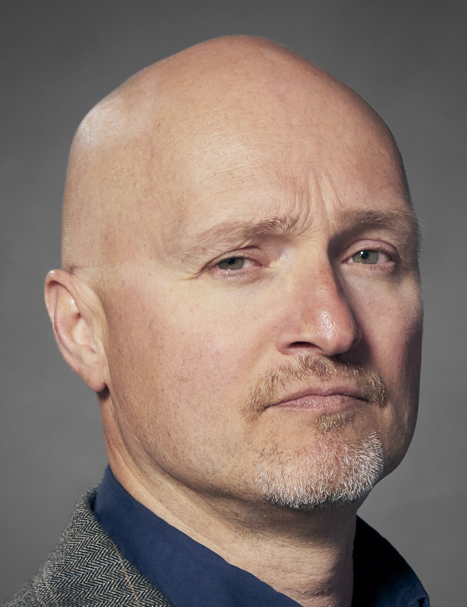

The Institute for Strategic AI
AI-Driven Autonomous Research.
The Institute for Strategic AI bridges advanced artificial intelligence with real-world application. We develop autonomous systems to address complex bottlenecks across industry, government, and research. We build predictive, generative, and agentic AI, for accelerating discovery pipelines and reduce R&D timelines and costs.
Our AI architectures are designed to transfer across domains, enabling work that cuts through traditional disciplinary boundaries. Our collaborations bring together technology and real-world impact—from precision robotic laboratories that are reshaping manufacturing, to better solutions for solar panel recycling, to predictive genetics with the Animal Genetics and Breeding Unit (AGBU), and rights-based digital infrastructures that embed Indigenous Data Sovereignty (IDS).
Operating at the frontier of applied agentic AI, the Institute translates complex, large-scale challenges into high-value capabilities.
Four Pillars. One Pipeline.
The Institute operates as a high-performance research pipeline, designed to move fundamental discoveries to real-world breakthroughs with maximum velocity.
1. Generative AI
The Discovery EngineWe use closed-source and tailored open-source Generative AI models capable of generating novel scientific hypotheses and synthesizing massive datasets. This capability expands the frontier of what is possible, driving breakthrough discoveries across all target sectors of industry, government, and research.
2. Predictive AI
Advanced Pattern RecognitionWe deploy predictive AI models that efficiently calculate physical properties, analyze vast datasets, and map complex relationships. Our predictive systems augment standard compute models by utilizing historical patterns to generate rapid forecasts for complex, large-scale challenges.
3. Agentic Workflows
The Autonomous LoopWe combine generative and predictive AI to build agentic AI frameworks that hypothesise, test against real-world data, learn, and iterate. This continuous feedback loop streamlines R&D pipelines and rapidly filters candidates before physical resources are ever expended.
4. Physical Validation
The Reality CheckAI predictions require physical proof. We hand off highest-confidence AI outputs directly into "self-driving" automated laboratories. By linking software to robotic synthesis, we close the loop, translating virtual projections into tangible, high-TRL outcomes.
AI-Driven Solar Panel Recycling
The Sovereign Bottleneck By 2030, Australia will generate 91,000 tonnes of end-of-life solar panel waste annually, representing over $1 billion in locked material value. While standard recycling recovers 95% of mass, high-purity silicon wafers and silver remain securely bonded to resistant substrates. Removing this silicon without destroying purity is a bottleneck for the circular economy.
Accelerating Traditional R&D Finding solvent combinations capable of breaking bonds between silicon and substrate typically takes years of trial-and-error. ISA accelerates this by deploying fully autonomous AI architecture. Moving beyond human intuition, our predictive AI screens thousands of quantum chemical formulations to identify optimal molecular targets.
Closing the Autonomous Loop Our agentic workflows hand off high-confidence solvent candidates directly to a $2.7M ARC-funded automated robotic laboratory. The platform executes the synthesis and feeds validation data back to the AI engine, actively steering the discovery of scalable, non-toxic recycling pathways.
Translation to Industry Engineered for localized deployment within Renewable Energy Zones (REZs), the Institute is converting a national waste crisis into a sovereign, high-value asset alongside major renewable developers.
Founding Directors
Prof. Amir Karton
Director, Institute for Strategic AI; Professor of Materials ChemistryProfessor Amir Karton is the Founding Director of the ISA and Associate Dean of Research at UNE, alongside appointments as a Visiting Researcher at Microsoft Research (AI4Science) and an Adjunct Professor at The University of Western Australia.
Operating at the intersection of AI and quantum mechanics, he develops agentic workflows and scientific foundation models to accelerate autonomous materials discovery. His foundational contributions are recognized by prestigious ARC Fellowships (DECRA and Future Fellowship), the Le Fèvre Medal, and ACS/RACI Lectureship Awards.

A/Prof. Aaron Driver
Deputy Director, Institute for Strategic AI; Chief AI Officer, UNEAssociate Professor Aaron Driver is the Founding Deputy Director of the ISA. Aaron leads LabNext70, driving AI integration across teaching, research, and operations. His background spans technology, marketing, and behavioural science, giving him a rare ability to bridge technical capability with strategic narrative.
At UNE, Aaron has been instrumental in building the university's sovereign AI platform. He brings deep expertise in industry partnership development and the translation of research into practical, high-impact applications.
Deployment & Partnerships
We partner with government agencies, industry leaders, and research organisations to solve complex problems with AI. If you have a challenge that needs a breakthrough, get in touch.
Institute for Strategic AI
University of New England
Armidale NSW 2351, Australia
Professor Amir Kartonamir.karton@une.edu.au
Associate Professor Aaron Driveraaron.driver@une.edu.au